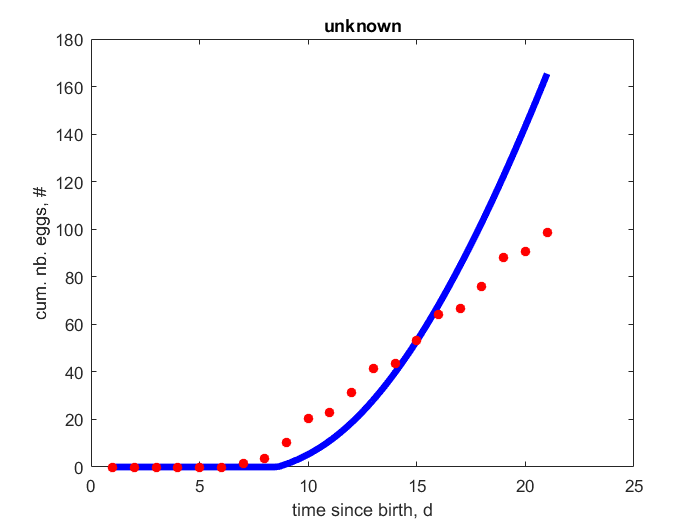
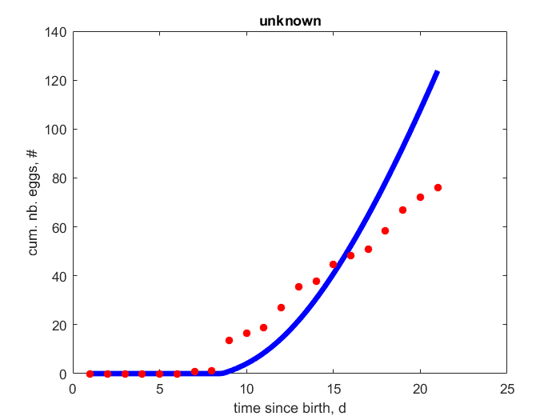
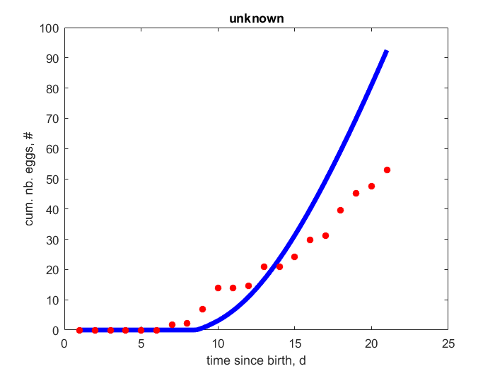
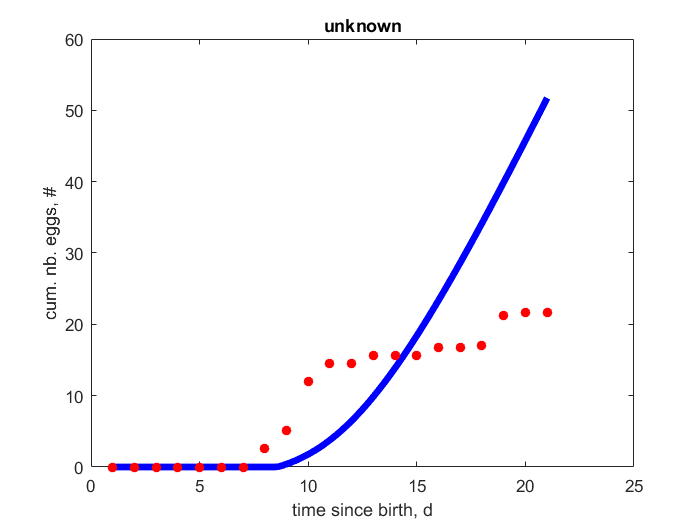
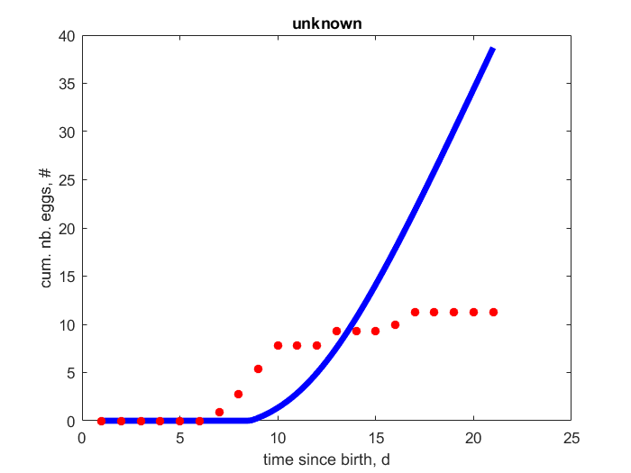
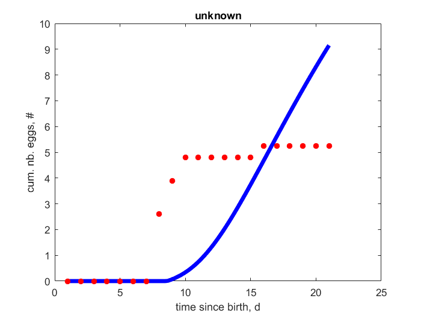

run_my_pet_mytox
clear all; close all; %clc global pets toxs % species names pets = {'my_pet'}; toxs = {'mytox'}; % check_my_pet(pets); % check pet-files for required fields % See estim_options for more options estim_options('default'); % runs estimation, uses nmregr method and filter % prints results, does not write file, does not produce html % 'method': 'nm' - use Nelder-Mead method (default); 'no' - do not estimate; % 'pars_init_method': 0 - get initial estimates from automatized computation (default) % 1 - read initial estimates from .mat file % 2 - read initial estimates from pars_init file % 'results_output': 0 - prints results to screen; (default) % 1 - prints results to screen, saves to .mat file % 2 - saves data to .mat file and graphs to .png files % (prints results to screen using a customized results file when there is one) % 'nontox_pars_init_method': 0 - reads parameters from .mat of species (default) % 1 - reads parameters from pars_init of species % 'nontox_par_estimation': 0 - fixes (does not estimate) all nontox parameters (default) % 1 - uses fix/free information from pars_init of species estim_options('max_step_number',5e3); % set options for parameter estimation estim_options('max_fun_evals',5e3); % set options for parameter estimation %estim_options('report',0); % save time during the estimation estim_options('pars_init_method', 2); estim_options('results_output', 0); estim_options('method', 'no'); estim_pars; % run estimation
my_pet MRE = 0.603 data and predictions (relative error) see figure (0.384) tN0, time since birth vs. cum. nb. eggs see figure (0.3906) tN1, time since birth vs. cum. nb. eggs see figure (0.5253) tN2, time since birth vs. cum. nb. eggs see figure (0.7344) tN3, time since birth vs. cum. nb. eggs see figure (1.05) tN4, time since birth vs. cum. nb. eggs see figure (0.5334) tN5, time since birth vs. cum. nb. eggs Parameters z, - 0.1325 0 F_m, l/d.cm^2 6.5 0 kap_X, - 0.9 0 kap_P, - 0.05 0 v, cm/d 0.1584 0 kap, - 0.61 0 kap_R, - 0.95 0 p_M, J/d.cm^3 1453 0 p_T, J/d.cm^2 0 0 k_J, 1/d 0.002 0 E_G, J/cm^3 4400 0 E_Hb, J 0.01379 0 E_Hp, J 0.3211 0 h_a, 1/d^2 0.0003105 0 s_G, - -0.3 0 del_M, - 0.264 0 T_A, K 6400 0 T_ref, K 293.1 0 f, - 1 0 k_e, 1/d 0.1498 1 c0, mMol/l 0.001 1 cA, mMol/l 0.3991 1 f_tN, - 0.9 1     